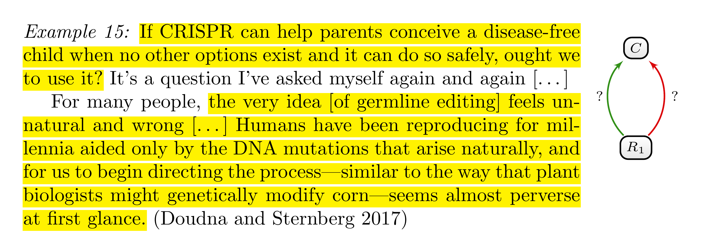
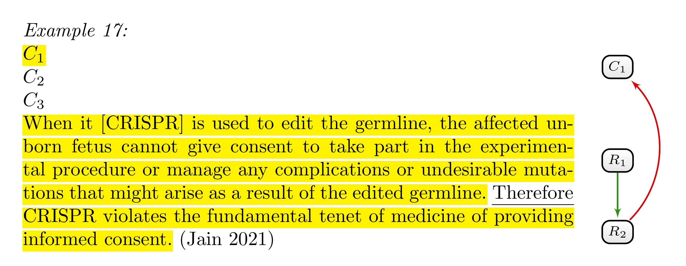
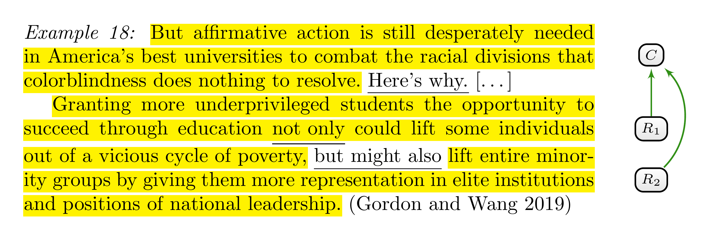
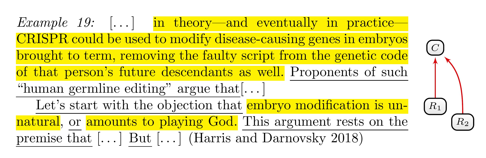

7 Frequently Asked Questions
7.1 Questions Concerning Main Claims
7.1.1 What are (main) claims? How do I identify and categorise them?
There is no special category for claims—and reasons for that matter—besides them being argumentative components. We simply call argumentative components claims if they are not formulated as reasons for or objections against some other statement and if other text segments are presented as argumentative components for or against them. In other words, a claim is an argumentative component with only incoming and no outgoing attack or support relations. This is, in some sense, a technical definition for the purpose of this guideline since it differs from our ordinary use of the term ‘claim’, according to which someone can formulate a claim without presenting justifications for it.
7.1.2 Question claims: The main claim is implicitly formulated as a question. Should I understand the main claim as a positive or negative answer to the question?
This is an important question because the answer will dictate whether reasons are reasons for or reasons against the claim.

Consider the example in Figure 7.1. The argument concerns germline editing, and the main question is posed in the first sentence. In the second paragraph, we find an argument against germline editing that invokes the notion of naturalness. We can interpret this reason in two ways: Either as a reason against a claim that corresponds to an affirmative answer to the main question or as a reason in favour of a claim that corresponds to a negative answer to the main question. In the first case, we would categorise the relation between the reason and the main claim as an attack; in the second, as support.
There is no rule to decide on this issue, and either possibility is fine. You can choose the main claim according to what feels natural to you. For some, the second paragraph might feel more like an argument against something. These people would tend to understand the main claim as the positive answer to the first question and would categorise the second paragraph as formulating a reason that attacks that claim.
The important thing is to be consistent with that decision. Once you decide to interpret the claim as an affirmative answer or a negative answer, this decision should be regarded as fixed for the analysis of other text segments.
7.1.3 Multiple claims: Can there be more than one claim in a text?
Yes, a single text can contain multiple claims. Sometimes a debate concerns two or more questions that are typically related to each other in some way. Answers to these questions make up different claims. For instance, the debate about germline editing concerns at least two different issues: the question of using this technology for therapeutic purposes and the question of further research into this technology using embryos. Different positions will formulate different answers to these questions, which might represent different claims in the debate about germline editing.
7.1.4 Conditional claims: Can main claims be formulated with conditions?
Yes. It is quite common to formulate claims conditionally, for instance, to express exceptions or qualify claims differently. Consider the following claim:
Example 16: Others argue that genome editing, once proved safe and effective, should be allowed to cure genetic disease (and indeed, that it is a moral imperative). (NHGRI 2017)
The anonymous proponents do not think that germline editing should be allowed unconditionally for therapeutic uses. Instead, they formulate specific sufficient conditions under which germline editing should be allowed as a therapy.
7.1.5 Implicit claims: While the text implicitly pins down the main claim, there is no specific text segment formulating the claim. How should I annotate and categorise reasons that support and attack the main claim?
Such cases represent a widespread phenomenon. Often, the context is clear enough that an author does not think it necessary to formulate their main claim explicitly. In the example in Figure 7.2, the author provides a reason why the use of CRISPR as a therapy would constitute a violation of informed consent without explicitly stating that this violation is a reason against the use of germline editing for therapeutic purposes (\(C_1\)). However, the cotext—which is omitted here—makes it quite clear that she presents it as a reason against germline editing since she goes on to present other reasons against germline editing.

When there is no explicit claim in the text, argumentative components attacking or supporting this claim will lack an argumentative unit as a target. In other words, attack and support relations will not point to a specific text segment. But how should we specify their targets in such cases? This is, fortunately, only a technical problem. On the practical level you will be provided with labels \(C_1\), \(C_2\), \(\dots\) in the text that act as placeholders for implicit claims. If there are implicit claims in the text, you can choose for every implicit claim one of these labels and annotate them as if they were the text segments formulating the claims—as indicated in Figure 7.2.
7.2 Questions Concerning the Notion of Argumentative Unit and Argumentative Component
7.2.1 Can an argumentative component lack incoming and outgoing support or attack relations?
No. According to the used definition of argumentative component (see Tip 2.1), a text segment can only formulate an argumentative component if it is presented as a justification for or objection against some other statement, or if some other text segment is presented as a reason for or against it. In the former case, the text segment has at least one outgoing relation and at least one ingoing relation in the latter.1
7.2.2 Should I annotate linguistic cues?
Linguistic cues should usually not be annotated as justificatory relevant. In other words, we do not consider them as belonging to the formulation of reasons and claims. One exception: Linguistic cues that would tear an otherwise contiguous text segment into different non-contiguous text segments can be considered part of the reason or claim. In the example in Figure 7.3, the phrase ‘not only \(\dots\), but also \(\dots\)’ is a linguistic cue that signposts the formulation of two different reasons (\(R_1\) and \(R_2\)) for the main claim \(C\). However, not annotating the ‘not only’ as justificatory relevant would mean representing the first reason by two non-contiguous text segments.

But even if we usually do not consider linguistic cues as belonging to the formulation of reasons, you should explicitly search for linguistic cues. Annotating them in some way might be very helpful for keeping an overview. For instance, linguistic cues are annotated in the examples used here by underlining them.
7.3 Questions Concerning the Individuation of Argumentative Components.
7.3.1 Can a reason or claim extend over a long text segment—let’s say, more than one paragraph in the text?
Yes, that can be the case. As an annotator, you should, however, also ask yourself whether everything the author writes is part of an argumentative unit. Mere contextual information (see Tip 5.2) or illustrative examples (see Tip 4.4) should not be annotated. Keep also in mind that claims and reasons do not necessarily correspond to exactly one single text segment but can be scattered over many non-contiguous text segments (see the next question).
7.3.2 How should I annotate a text if a reason or claim seems to be scattered over non-contiguous text segments?
An argumentative component does not necessarily correspond to exactly one single text segment but may be scattered over many non-contiguous text segments. In this case, annotate these text segments as belonging to the same argumentative component. Tip 5.1, 5.2 and 5.3 will help you to identify text segments that belong to the argumentative component. In short, they tell you that sentences and subclauses that are intended to be taken together to understand the argumentative component’s main idea or its relevance are part of it (see Tip 5.1). Everything else is not.
- On the practical level you will be provided with different labels (R1, R2, …, C1, C2, …) that can be understood as names for argumentative components. If a reason corresponds to many non-contiguous text segments, you simply have to use the same label.
7.3.3 How do I annotate a text segment that belongs to different argumentative components?
The same text segment may belong to different argumentative components according to the formulated tips. For instance, the same text segment can be important for understanding the main idea of two different reasons. According to Tip 5.1, this text segment would belong to both reasons. For the purpose of this guideline, a single text segment can only be annotated to belong to one argumentative component. In such cases, do not annotate the text segment as part of an argumentative unit.
7.3.4 What if linguistic cues conflict with the tips about the individuation of argumentative components?
How do I annotate text segments that, according to the given linguistic cues, belong to one argumentative component but that, according to the formulated tips, constitute separate argumentative components? The short answer: The tips for the individuation of argumentative components (see Tip 5.1, 5.2, 5.3, 5.5 and 5.6) should always be prioritised over what linguistic cues tell you.
A simple example is provided in Figure 7.4. The linguistic cues ‘the objection’ and ‘this argument’ suggest that the authors think of the second paragraph as one objection. However, we can understand the paragraph as presenting two relevant points that provide independent support for the main claim being false. The argument from naturalness is grounded in the idea that the natural is somehow better or preferable to the unnatural. The other point against the main claim seems to rely on the notion of hybris—the idea that we, as mere humans, should not act like gods. These are, admittedly, speculations of what is meant by both points. However, on the presented understanding, both points are independent. According to Tip 5.5, we should, therefore, analyse this paragraph as presenting two objections.

Some background: Tips 5.1–5.6 (see Chapter 5) clarify what we understand as one reason and what we understand as different reasons in the context of analysing argumentation structure. In other words, these tips spell out how we individuate and count reasons. The suggested understanding can, of course, conflict with what the author understands as a single reason. Hence, the author may intend one particular text segment to express one reason, whereas tips 5.1–5.6 suggest considering it as many reasons—or the other way around. In such conflicting cases, you should always individuate reasons according to the given tips. This rule is important because we might want to compare the number of reasons in different texts, and the result of such a comparison should be grounded in some text-independent criterion to count arguments. In other words, we should count reasons according to clarified, transparent criteria, not necessarily by the author’s subjective understanding of how they would individuate and count their reasons.
7.4 Questions Concerning Attack and Support Relations
7.4.1 Can a reason be a reason for different statements? In other words, can an argumentative component have more than one outgoing support or attack relation?
Yes, an argumentative component can be formulated as a reason for or objection against different statements. In that case, it would have more than one outgoing support or attack relation, respectively. However, you should always consider the given tips, especially Tip 5.6, to check if there are really multiple outgoing relations (see also the next question).
7.4.2 Target ambiguity: What if I am unsure about what is being supported or objected by a reason?
What should I do if it is not clear what is being justified? How should I choose the targets of outgoing support and attack relations if there are different possible interpretations?
If you are not sure about which other text segment is supposed to be supported or attacked by a text segment, you should, first, use Tip 5.6, which might help to decide between different interpretations of what the target is.
This tip suggests reformulating the possible attack or support relations in your own words and choosing among them using the principles of charity and accuracy. According to these principles, you should choose the formulation that maximises argumentative strength (charity) and is at the same time faithful to the author’s intentions of understanding the presented reasons (accuracy).
However, Tip 5.6 will not always help disambiguate between different interpretations of what a text segment is supposed to justify. If you are still unsure of the best interpretation, you can categorise multiple support and attack relations. In this case, you would include all plausible interpretations of what the target is as a target.
7.4.3 Multiple relations: Can two argumentative components be connected by different justificatory relations?
Usually, there will be, at most, one justificatory relation between two argumentative components.
However, two situations can be plausibly represented by connecting two argumentative components by two justificatory relations:
- First, an author might express that two statements are contradictory to each other. For instance, the author might suggest that two statements are inconsistent, that is, that they cannot both be true at the same time. In such cases, you can connect the two argumentative units with attack relations in both directions.
- Second, an author might express that a justification is a circular (i.e., that it presupposes what it is supposed to justify). Support relations in both directions might represent these cases.
Besides these plausible possibilities, it is conceivable that an author formulates any number of justificatory relations between two argumentative components. For instance, it is conceivable that they use linguistic cues to formulate support and attack relations that connect two argumentative units. However, such combinations will be flawed from an evaluative standpoint. What can it mean, for instance, that something is a reason for and an objection to the same claim? It is doubtful that arguers are prone to such fundamental flaws in argumentation. Accordingly, you should only connect two argumentative components in this way if the linguistic cues point unambiguously in this direction. If there are no such linguistic cues, the principle of charity recommends dispensing with such interpretations.
Literature
However, note that in the case of implicit claims, you will encounter text segments with outgoing relations that do not point to other text segments (see Section 7.1.5).↩︎